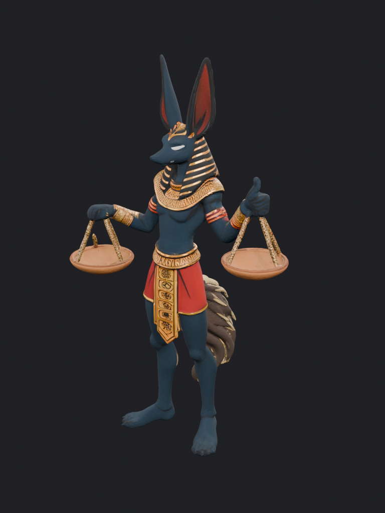
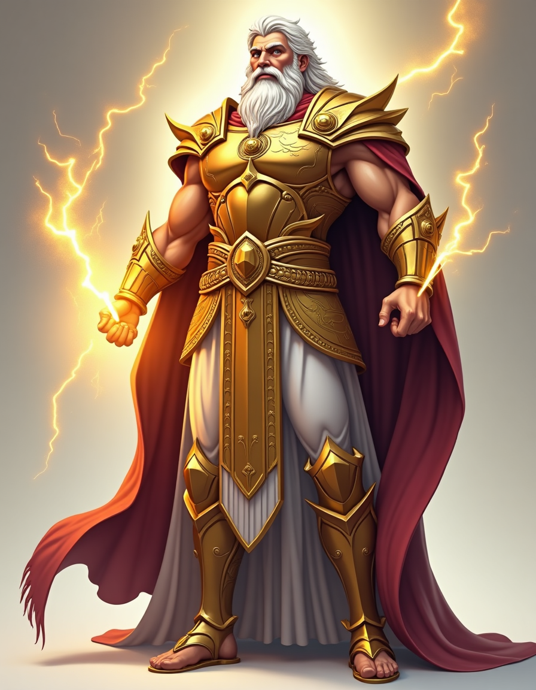
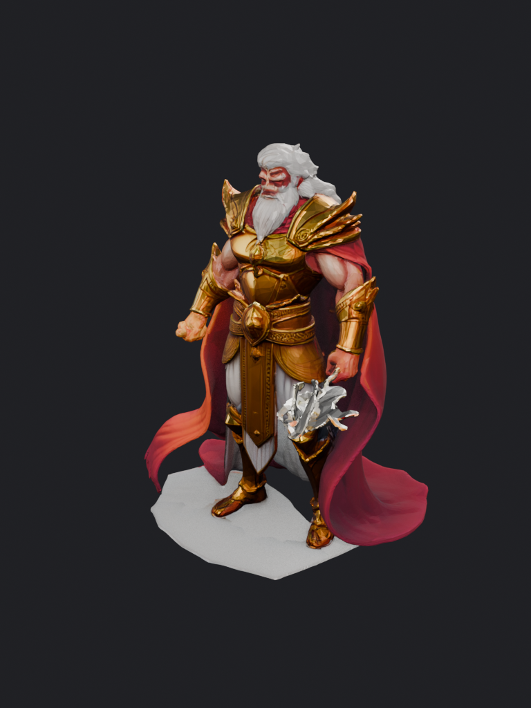

Aeonrift image-to-3D generator A/B
Two champions (Anubis, Zeus) — same Flux concept reference into each generator, then
rendered with an identical headless Blender EEVEE camera/light rig. fal generators (Tripo v3, Meshy v6) were skipped — no FAL key found in the environment.
| Champion | Concept ref | TRELLIS (firtoz/trellis) | Hunyuan3D-2.1 (ndreca/hunyuan3d-2.1) | Hunyuan3D-2mv (tencent/hunyuan3d-2mv) |
|---|
Anubisanubis-warden-of-scales | Concept ref (Flux)  image-to-3D input | TRELLIS (firtoz/trellis)  13,966 tris · 1.6 MB $0.00 (reused) · reused existing baseline | Hunyuan3D-2.1 (ndreca/hunyuan3d-2.1)  40,000 tris · 7.6 MB $0.27/run · 110s gen | Hunyuan3D-2mv (tencent/hunyuan3d-2mv)  40,000 tris · 0.8 MB $0.11/run · 12s gen |
Zeuszeus | Concept ref (Flux)  image-to-3D input | TRELLIS (firtoz/trellis)  66,287 tris · 3.0 MB $0.00 (reused) · reused existing baseline | Hunyuan3D-2.1 (ndreca/hunyuan3d-2.1)  40,000 tris · 7.2 MB $0.27/run · 126s gen | Hunyuan3D-2mv (tencent/hunyuan3d-2mv)  40,000 tris · 0.8 MB $0.11/run · 17s gen |
How to read: every model was fed the same reference.png and rendered with the
same camera and 3-point lighting, so differences are the generator's, not the render's.
Tri-count is measured post-import in Blender (triangulated). Cost is the per-run Replicate estimate;
gen time is the model's predict_time. TRELLIS is the current baseline (reused, no new spend).
Generators: TRELLIS firtoz/trellis · Hunyuan3D-2.1 ndreca/hunyuan3d-2.1
(PBR texture + auto-rig) · Hunyuan3D-2mv tencent/hunyuan3d-2mv (single front view).
Verdict — winner: Hunyuan3D-2.1
Hunyuan3D-2.1 is clearly the best stylized game-ready result on both champions: sharpest
geometry, faithful PBR texture, and it preserves flowing/ornate detail the baseline loses
(e.g. Zeus's full flowing cape and layered gold armor; Anubis's crisp collar, kilt glyphs and
fluffy tail). ~$0.27/run, ~110–125s. Minor artifacts to QA: occasional glitch shard where the
concept holds a prop (Zeus's lightning bolt) and slight face-texture bleed.
TRELLIS (baseline) is acceptable and cheap but noticeably softer/“melted” — blobby hands,
truncated Zeus cape, less crisp ornamentation.
Hunyuan3D-2mv produced clean geometry but no texture (white clay) from a single front
image — not usable as-is without true multi-view inputs or a separate texture pass, despite being
cheapest/fastest ($0.11, ~12–17s).
Recommendation: switch the full 47-batch to Hunyuan3D-2.1 (~47 × $0.27 ≈ $12.70 total),
with a light artifact-QA pass. Keep TRELLIS only as a cheap fallback; skip 2mv unless fed multi-view refs.